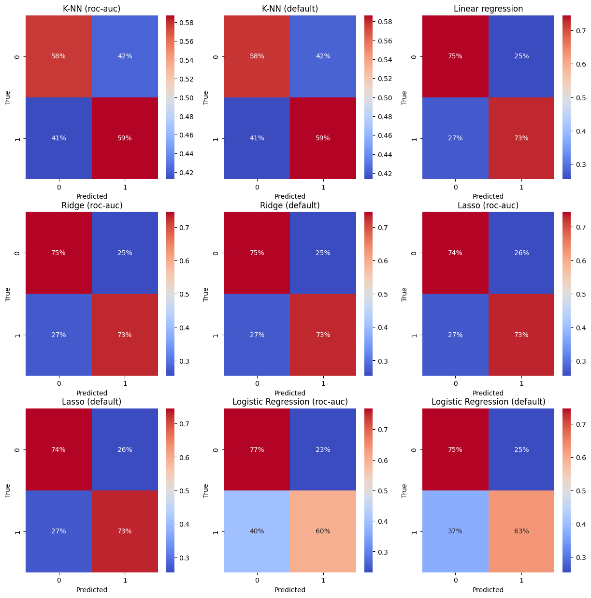

Exercice 3#
Load data from exercice 2#
import pandas as pd
df_fraud = pd.read_csv('df_fraud_filtered_imputed_encoded_reduced.csv')
/tmp/ipykernel_101924/1763235094.py:1: DeprecationWarning:
Pyarrow will become a required dependency of pandas in the next major release of pandas (pandas 3.0),
(to allow more performant data types, such as the Arrow string type, and better interoperability with other libraries)
but was not found to be installed on your system.
If this would cause problems for you,
please provide us feedback at https://github.com/pandas-dev/pandas/issues/54466
import pandas as pd
---------------------------------------------------------------------------
FileNotFoundError Traceback (most recent call last)
Cell In[1], line 2
1 import pandas as pd
----> 2 df_fraud = pd.read_csv('df_fraud_filtered_imputed_encoded_reduced.csv')
File ~/miniconda3/envs/ml_venv/lib/python3.9/site-packages/pandas/io/parsers/readers.py:1024, in read_csv(filepath_or_buffer, sep, delimiter, header, names, index_col, usecols, dtype, engine, converters, true_values, false_values, skipinitialspace, skiprows, skipfooter, nrows, na_values, keep_default_na, na_filter, verbose, skip_blank_lines, parse_dates, infer_datetime_format, keep_date_col, date_parser, date_format, dayfirst, cache_dates, iterator, chunksize, compression, thousands, decimal, lineterminator, quotechar, quoting, doublequote, escapechar, comment, encoding, encoding_errors, dialect, on_bad_lines, delim_whitespace, low_memory, memory_map, float_precision, storage_options, dtype_backend)
1011 kwds_defaults = _refine_defaults_read(
1012 dialect,
1013 delimiter,
(...)
1020 dtype_backend=dtype_backend,
1021 )
1022 kwds.update(kwds_defaults)
-> 1024 return _read(filepath_or_buffer, kwds)
File ~/miniconda3/envs/ml_venv/lib/python3.9/site-packages/pandas/io/parsers/readers.py:618, in _read(filepath_or_buffer, kwds)
615 _validate_names(kwds.get("names", None))
617 # Create the parser.
--> 618 parser = TextFileReader(filepath_or_buffer, **kwds)
620 if chunksize or iterator:
621 return parser
File ~/miniconda3/envs/ml_venv/lib/python3.9/site-packages/pandas/io/parsers/readers.py:1618, in TextFileReader.__init__(self, f, engine, **kwds)
1615 self.options["has_index_names"] = kwds["has_index_names"]
1617 self.handles: IOHandles | None = None
-> 1618 self._engine = self._make_engine(f, self.engine)
File ~/miniconda3/envs/ml_venv/lib/python3.9/site-packages/pandas/io/parsers/readers.py:1878, in TextFileReader._make_engine(self, f, engine)
1876 if "b" not in mode:
1877 mode += "b"
-> 1878 self.handles = get_handle(
1879 f,
1880 mode,
1881 encoding=self.options.get("encoding", None),
1882 compression=self.options.get("compression", None),
1883 memory_map=self.options.get("memory_map", False),
1884 is_text=is_text,
1885 errors=self.options.get("encoding_errors", "strict"),
1886 storage_options=self.options.get("storage_options", None),
1887 )
1888 assert self.handles is not None
1889 f = self.handles.handle
File ~/miniconda3/envs/ml_venv/lib/python3.9/site-packages/pandas/io/common.py:873, in get_handle(path_or_buf, mode, encoding, compression, memory_map, is_text, errors, storage_options)
868 elif isinstance(handle, str):
869 # Check whether the filename is to be opened in binary mode.
870 # Binary mode does not support 'encoding' and 'newline'.
871 if ioargs.encoding and "b" not in ioargs.mode:
872 # Encoding
--> 873 handle = open(
874 handle,
875 ioargs.mode,
876 encoding=ioargs.encoding,
877 errors=errors,
878 newline="",
879 )
880 else:
881 # Binary mode
882 handle = open(handle, ioargs.mode)
FileNotFoundError: [Errno 2] No such file or directory: 'df_fraud_filtered_imputed_encoded_reduced.csv'
Preprocessing#
from sklearn.model_selection import train_test_split
df_fraud_train, df_fraud_test = train_test_split(df_fraud, test_size=0.2, random_state=42)
# Count the number of 0 et 1 in the training set
print(df_fraud_train['isFraud'].value_counts())
isFraud
0.0 456011
1.0 16421
Name: count, dtype: int64
# Keep 15000 of each
df_fraud_train_0 = df_fraud_train[df_fraud_train['isFraud'] == 0].sample(n=15000, random_state=42)
df_fraud_train_1 = df_fraud_train[df_fraud_train['isFraud'] == 1].sample(n=15000, random_state=42)
df_fraud_train = pd.concat([df_fraud_train_0, df_fraud_train_1])
df_fraud_train_input = df_fraud_train.drop('isFraud', axis=1)
df_fraud_train_output = df_fraud_train['isFraud']
Linear regression, Ridge et Lasso are usually not models of classification so to use them as classificatio models, we decide to classificate as 1 if the output predicted is more than 0.5 and 0 else.
Training#
from sklearn.neighbors import KNeighborsClassifier
from sklearn.linear_model import LinearRegression, Ridge, Lasso, LogisticRegression
from sklearn.model_selection import GridSearchCV
grid_knn = {
'n_neighbors' : [k for k in range(1, 50)]
}
grid_lr = {}
grid_ridge = {
'alpha' : [1e-9, 1e-6, 1e-3, 1, 10, 100, 1000],
'max_iter' : [10, 100, 1000, 10000, 100000, 1000000]
}
grid_lasso = {
'alpha' : [1e-9, 1e-6, 1e-3, 1, 10, 100, 1000],
'max_iter' : [10, 100, 1000, 10000, 100000, 1000000]
}
grid_LogReg = {
'penalty': ['l2'],
'C': [1e-9, 1e-6, 1e-3, 1, 100, 1000, 10000],
'max_iter': [10, 100, 1000, 10000, 100000]
}
models_name = ['K-NN (roc-auc)', 'K-NN (default)', 'Linear regression', 'Ridge (roc-auc)', 'Ridge (default)', 'Lasso (roc-auc)', 'Lasso (default)', 'Logistic Regression (roc-auc)', 'Logistic Regression (default)']
grids = [grid_knn, grid_knn, grid_lr, grid_ridge, grid_ridge, grid_lasso, grid_lasso, grid_LogReg, grid_LogReg]
models = [
GridSearchCV(KNeighborsClassifier(), grid_knn, cv=5, n_jobs=-1, scoring='roc_auc'),
GridSearchCV(KNeighborsClassifier(), grid_knn, cv=5, n_jobs=-1),
GridSearchCV(LinearRegression(), grid_lr, cv=5, n_jobs=-1),
GridSearchCV(Ridge(), grid_ridge, cv=5, n_jobs=-1, scoring='roc_auc'),
GridSearchCV(Ridge(), grid_ridge, cv=5, n_jobs=-1),
GridSearchCV(Lasso(), grid_lasso, cv=5, n_jobs=-1, scoring='roc_auc'),
GridSearchCV(Lasso(), grid_lasso, cv=5, n_jobs=-1),
GridSearchCV(LogisticRegression(), grid_LogReg, cv=5, n_jobs=-1, scoring='roc_auc'),
GridSearchCV(LogisticRegression(), grid_LogReg, cv=5, n_jobs=-1)
]
from sklearn.metrics import precision_score, recall_score, f1_score, roc_auc_score
import warnings
warnings.filterwarnings('ignore')
results = pd.DataFrame(columns=["Model", "Precision", "Recall", "f1-score", "AUC"])
for i, (model_name, model, grid) in enumerate(zip(models_name, models, grids)):
print(f"Training {model_name}")
model.fit(df_fraud_train_input, df_fraud_train_output)
print(f"Best parameters: {model.best_params_}")
y_pred = model.predict(df_fraud_test.drop('isFraud', axis=1))
if model_name in {'Linear regression', 'Ridge (roc-auc)', 'Ridge (default)', 'Lasso (roc-auc)', 'Lasso (default)'}:
y_pred = [1 if y > 0.5 else 0 for y in y_pred]
results.loc[i] = [model_name, f"{precision_score(df_fraud_test['isFraud'], y_pred):.3f}", f"{recall_score(df_fraud_test['isFraud'], y_pred):.3f}", f"{f1_score(df_fraud_test['isFraud'], y_pred):.3f}", f"{roc_auc_score(df_fraud_test['isFraud'], y_pred):.3f}"]
for model_name, model in zip(models_name, models):
print(f"Best parameters for {model_name}: {model.best_params_}")
Best parameters for K-NN (roc-auc): {'n_neighbors': 2}
Best parameters for K-NN (default): {'n_neighbors': 1}
Best parameters for Linear regression: {}
Best parameters for Ridge (roc-auc): {'alpha': 1e-09, 'max_iter': 10}
Best parameters for Ridge (default): {'alpha': 1, 'max_iter': 10}
Best parameters for Lasso (roc-auc): {'alpha': 1e-09, 'max_iter': 10}
Best parameters for Lasso (default): {'alpha': 1e-06, 'max_iter': 10}
Best parameters for Logistic Regression (roc-auc): {'C': 1000, 'max_iter': 100000, 'penalty': 'l2'}
Best parameters for Logistic Regression (default): {'C': 1000, 'max_iter': 100000, 'penalty': 'l2'}
print(results.to_string(index=False))
Model Precision Recall f1-score AUC
K-NN (roc-auc) 0.068 0.439 0.118 0.607
K-NN (default) 0.056 0.667 0.104 0.626
Linear regression 0.096 0.729 0.170 0.737
Ridge (roc-auc) 0.096 0.729 0.170 0.737
Ridge (default) 0.097 0.729 0.170 0.737
Lasso (roc-auc) 0.096 0.731 0.170 0.738
Lasso (default) 0.096 0.731 0.170 0.738
Logistic Regression (roc-auc) 0.084 0.614 0.149 0.683
Logistic Regression (default) 0.084 0.614 0.149 0.683
Results#
Every model has a low precision because the repartition of the 0 & 1 in the target field is unbalanced.
Let’s see the confusion matrices.
# Afficher les matrices de confusion en subplot
import matplotlib.pyplot as plt
import seaborn as sns
import numpy as np
from sklearn.metrics import confusion_matrix
fig, axes = plt.subplots(3, 3, figsize=(15, 15))
for i, (model_name, model) in enumerate(zip(models_name, models)):
y_pred = model.predict(df_fraud_test.drop('isFraud', axis=1))
if model in {best_lr, best_ridge_roc, best_ridge_default, best_lasso_roc, best_lasso_default}:
y_pred = [1 if y > 0.5 else 0 for y in y_pred]
cm = confusion_matrix(df_fraud_test['isFraud'], y_pred)
cm_normalized = cm.astype('float') / cm.sum(axis=1)[:, np.newaxis]
sns.heatmap(cm_normalized, annot=True, fmt='.0%', ax=axes[i//3, i%3], cmap='coolwarm')
axes[i//3, i%3].set_title(model_name)
axes[i//3, i%3].set_xlabel('Predicted')
axes[i//3, i%3].set_ylabel('True')
plt.show()

The confusion matrix are quite similar.
Every model has quite the same results sothe easist way to choose is to choose the simplest model. That’s why we can choose the Linear regression.
NB : The precision of the model is very low so the regression can be inexact. The prediction of this fraud is a difficult task and require more time of study to find the parameters and models.